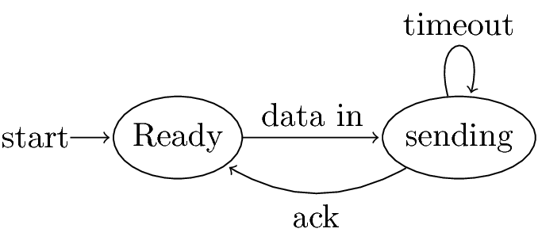
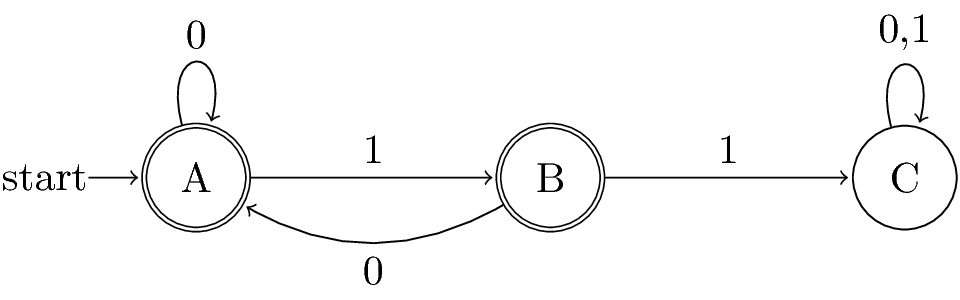

Automata Theory
Table of Contents
Automata Theory on Lagunita
1 IN-PROGRESS Week 1: Finite Automata
1.1 DONE Course outline and motivation
Automata is ranked second after database for optional courses in a
Stanford survey of grads 5 years out. 3X the score for AI.
- Regular expressions are used in many systems.
- UNIX a.*b.
- DTD describe XML tags with a RE format like
person(name, addr, child*).
- UNIX a.*b.
- Finite automata model protocols, electronic circuits.
- Context-free grammars are used to describe the syntax of
essentially every programming language.
- Not to forget their important role in describing natural
languages.
- Not to forget their important role in describing natural
- And DTD taken as a whole, are really CFGs.
- When developing solutions to real problems, we often confront the
limitations of what software can do.
- Undecidable things - no program whatever can do it.
- Intractable things - there are programs, but no fast programs.
- Undecidable things - no program whatever can do it.
- Automata theory gives you the tools.
Other Good Stuff
- We'll learn how to deal formally with discrete systems.
- Proofs: You never really prove a program correct, but you need
to be thinking of why a tricky technique really works.
- Proofs: You never really prove a program correct, but you need
- We'll gain experience with abstract models and constructions.
- Models layered software architectures.
- Models layered software architectures.
Course Outline
- Regular Languages and their descriptors:
- Finite automata, nondeterministic finite automata, regular
expressions. - Algorithms to decide questions about regular languages, e.g., is
it empty? - Closure properties of regular languages.
- Finite automata, nondeterministic finite automata, regular
- Context-free languages and their descriptors:
- Context-free grammars, pushdown automata.
- Decision and closure properties.
- Context-free grammars, pushdown automata.
- Recursive and recursively enumerable languages.
- Turing machines, decidability of problems.
- The limit of what can be computed.
- Turing machines, decidability of problems.
- Intractable problems.
- Problems that (appear to) require exponential time.
- NP-completeness and beyound.
- Problems that (appear to) require exponential time.
1.2 DONE Informal introduction to finite automata
What is a Finite Automaton?
- A formal system.
- Remembers only a finite amount of information.
- Information represented by its state.
- State changes in response to inputs.
- Rules that tell how the state changes in response to inputs are
called transitions.
Tennis
- Match = 3-5 sets.
- Set = 6 or more games.
Scoring a Game
- One person serves throughout.
- To win, you must score at least 4 points.
- You also must win by at least 2 points.
- Inputs are s = "server wins point" and o = "opponent wins point."

Acceptance of Inputs
- Given a sequence of inputs (input string), start in the start
state and follow the transition from each symbol in turn. - Input is accepted if you wind up in a final (accepting) state
after all inputs have been read.
Language of an Automaton
- The set of strings accepted by an automaton A is the language of A.
- Denoted L(A).
- Different sets of final states → different languages.
- Example: As designed, L(Tennis) = strings that determins the winner.
1.3 IN-PROGRESS Deterministic Finite Automata
Alphabets
- An alphabet is any finite set of symbols.
- Examples:
ASCII, Unicode,
{0, 1} (binary alphabet),
{a, b, c}, {s, o},
set of signals used by a protocol.
Strings
- A string over an alphabet Σ is a list, each element of
which is a member of Σ.
- Strings shown with no commas or quotes, e.g., abc or 01101.
- Strings shown with no commas or quotes, e.g., abc or 01101.
- Σ* = set of all strings over alphabet Σ.
- The length of a string is its number of positions.
- ε stands for the empty string (string of length 0).
Example: Strings
- {0, 1}* = {ε, 0, 1, 00, 01, 10, 11, 000, 001, …}
- Subtlety: 0 as a string, 0 as a symbol look the same.
- Context determines the type.
- Context determines the type.
Languages
- A language is a subset of Σ* for some alphabet Σ.
- Example: The set of string of 0s and 1s with no two consecutive 1s.
- L = {ε, 0, 1, 00, 01, 10, 000, 001, 010, 100, 101, 0000,
0001, 0010, 0100, 0101, 1000, 1001, 1010, …}
Fibonacci sequence hides here.
Deterministic Finite Automata
- A formalism for defining languages,
consisting of:
- A finite set of states (Q, typically).
- An input alphabet (Σ, typically).
- A transition function (δ, typically).
- A start state (q0, in Q, typically).
- A set of final states (F ⊂ Q, typically).
- "Final" and "accepting" are synonyms.
- "Final" and "accepting" are synonyms.
- A finite set of states (Q, typically).
The Transition Function
- Takes two arguments: a state and an input symbol.
- δ(q, a) = the state that the DFA goes to when it is in state
q and input a is received. - Note: always a next state - add a dead state if no transition
Graph Representation of DFAs
- Nodes = states.
- Arcs represent transition function.
- Arc from state p to state q labeled by all those input symbols
that have transitions from p to q.
- Arc from state p to state q labeled by all those input symbols
- Arrow labeled "Start" to the start state.
- Final states indicated by double circles.


A: String so far has no 11, does not end in 1.
B: String so far has no 11, but ends in a single 1.
C: Consecutive 1s have been seen.

ALternative Representation: Transition Table
| 0 | 1 | ||
|---|---|---|---|
| * | A | A | B |
| * | B | A | C |
| C | C | C |